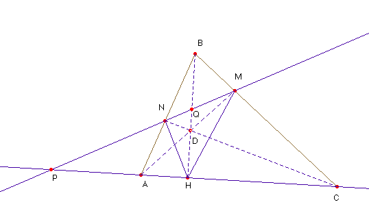
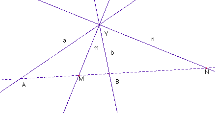

Solución de Saturnino Campo Ruiz, profesor de Matemáticas del I.E.S. Fray Luis de León (Salamanca) (20 de enero de 2003)
Problema n º 71.- Teorema de Blanchet.
En todo triángulo ABC de altura BH, al trazar las cevianas AM y CN concurrentes con BH, se establece que la altura será bisectriz del ángulo MHN.

Para probar lo que queremos habremos de demostrar que la razón doble de las rectas, concurrentes en H, HP, HQ, HN, HM es –1, pues si esto es así, utilizando la caracterización proyectiva de las bisectrices de dos rectas concurrentes, resultará que, como queríamos probar HP y HQ son las bisectrices de las rectas HN y HM.Definimos la razón doble de cuatro rectas concurrentes como la razón doble de sus proyecciones sobre una secante común. De las propiedades de la razón doble de 4 puntos alineados se deduce que esta definición es independiente de la secante elegida. Sean pues las rectas a, b, m y n, concurrentes en V.
Si son A, B, M y N los puntos que determinan en una secante r, el valor de su razón doble (abmn)= = , sin más que aplicar el teorema de los senos para el cálculo de cada razón.
Si a = áng (a,m); b = áng (m,b) y áng (m,n) = 90º, entonces: , de aquí se obtiene si a = b (abmn) = -1, o sea, si m y n son bisectrices, la cuaterna es armónica.
Recíprocamente, si la cuaterna es armónica, (abmn)= -1, entonces
sen a cos b + sen a cos b =0,
lo cual es equivalente a sen (a-b) = 0, de ahí que a = b. Así pues, m y n son bisectrices de a y b.
Probemos ahora que las rectas HP, HQ, HN, HM forman una cuaterna armónica.
1) (ACPH) = -1.
En efecto, la proyección de esta cuaterna desde D sobre la recta MN nos da la cuaterna (MNPQ), que, proyectada ahora desde B sobre AC nos da (CAPH). Si la razón doble (ACPH) vale m, la obtenida permutando los dos primeros puntos es igual a su recíproco, el número 1/m, pero estos dos números son iguales entre sí, ya que la razón doble es invariante por proyecciones, así pues m2=1, y m = -1, pues para valer 1 han de ser iguales los dos primeros puntos de la cuaterna.
Podemos obtener este mismo resultado utilizando conjuntamente los teoremas de Menelao y Ceva. Aplicando el teorema de Menelao al triángulo ABC cortado por la recta MN, obtenemos y el de Ceva (para las tres cevianas concurrentes en D) , dividiéndolas entre sí resulta que (ACHP) = -1.
2) (HP HB HN HM ) = (PQNM) =(MNPQ) = -1. Y se acaba la demostración.
Un caso particular de este teorema se tiene cuando las tres concurrentes son las alturas, que puede tratarse por otros métodos.
